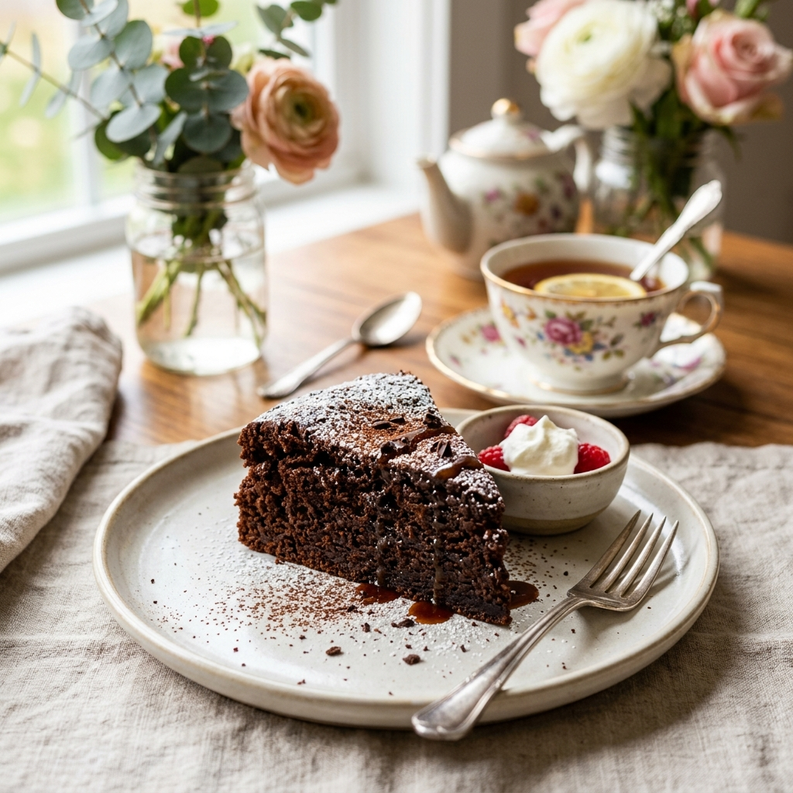
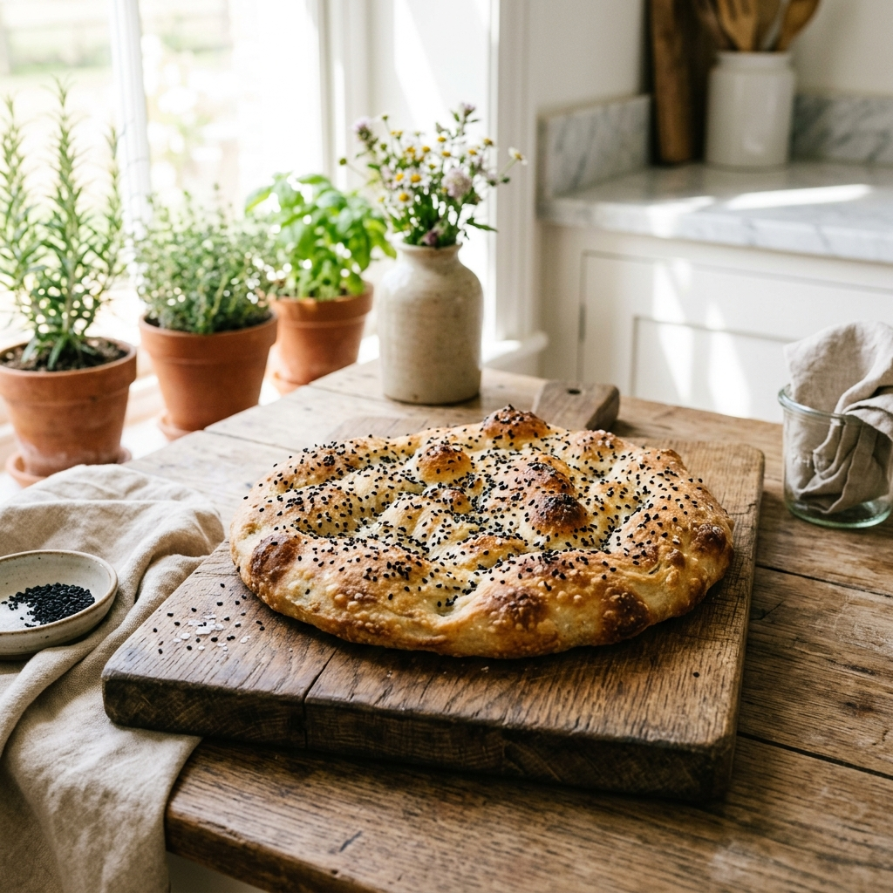
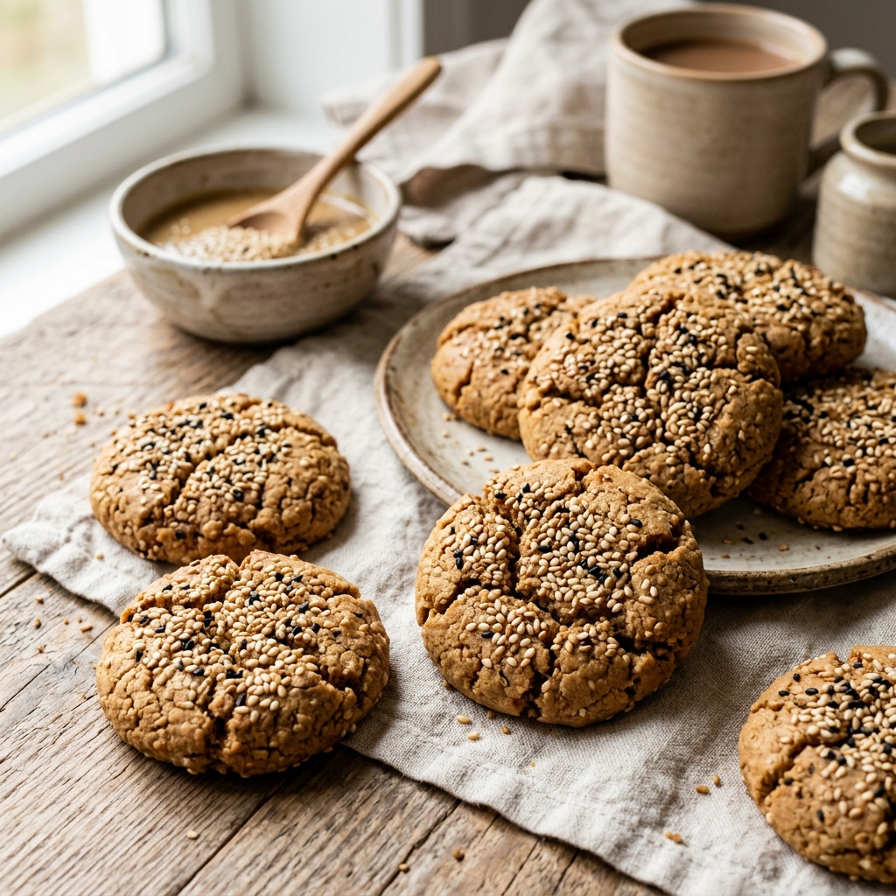
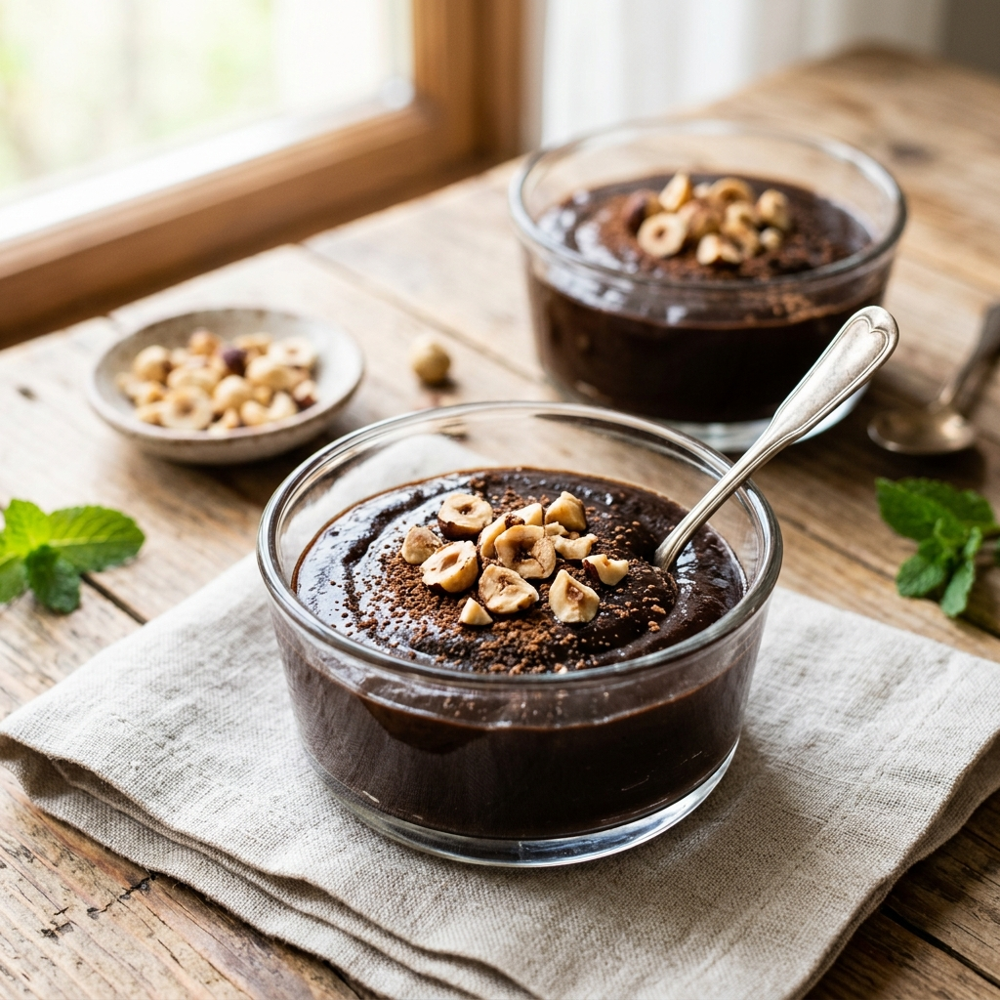

Vorspeise / Dip
Klassischer Anatolischer Hummus
Rezept ansehen
Salat / Beilage
Frischer Granatapfel-Walnuss-Salat
Rezept ansehen
Suppe / Hauptspeise
Traditionelle Anatolische Tarhana-Suppe
Rezept ansehen
Backen / Dessert
Zuckerfreier Schoko-Kuchen
Rezept ansehen
Backen / Brot
Glutenfreies Fladenbrot
Rezept ansehen
Backen / Kekse
Vegane Tahin-Kekse
Rezept ansehen
Hauptspeise / Meze
Gefüllte Weinblätter (Sarma)
Rezept ansehen
Dessert